来源：https://ncna8jnh5j4n.feishu.cn/docx/R81YdRdbUoyS7wxp6cGc5lLZnQf
我从一个全职宝妈，花1年时间，重回职场；从业绩为0的崩溃到快速成为销冠；从打工到出来单干，实现月入二十万。
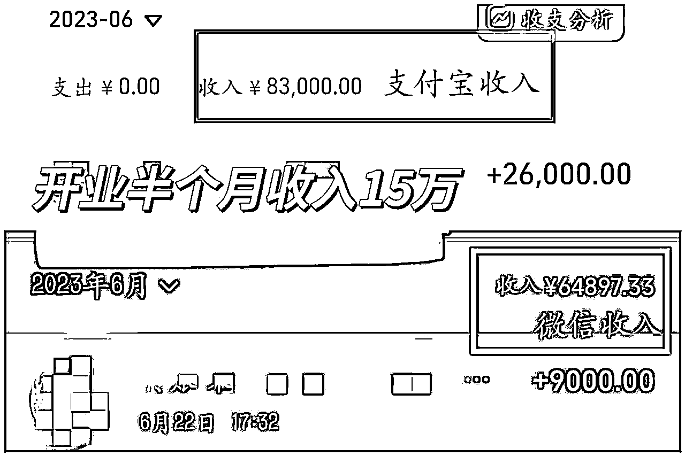
我这一路走过来，一步一个脚印，不仅改变的是收入和心性，更让我重新夺回自己的人生。
人生永远没有太晚的开始，全职妈妈又怎么样，35岁又怎么样，当你能够觉醒并为之改变，任何时候都不晚。
接触瑜伽之前，我和大多数全职宝妈一样，带娃就是生活的全部，那时住在农村，两三个月都不上一次街，最要命的是，产后胖了30多斤。
因为是一个人带娃，只能等娃睡着了，在床边悄悄的原地跑步，娃睡两三个小时，我就跑两三个小时，100天坚持运动和饮食控制，减了30多斤。
2017年，合肥的“MO瑜伽艺术生活节”，彻底改变了我的生活轨迹。
瑜伽老师们精湛的体位演示，凹凸有致的身材，加上练习后从未有过的酣畅淋漓和无痛一身轻的快感，那一刻，我便对瑜伽爱到一发不可收拾，并把长期目标定位为运动康复。
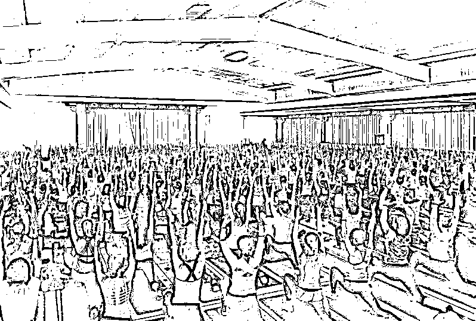
紧接着就开始了为期365天瑜伽不间断打卡，为后面的系统学习打基础。
大冬天里，从凌晨4点到8点，不懂原理就听网课，看经典书籍，画骨骼肌肉图，练卷腹、深蹲、提升力量；趴青蛙、压腿、提升柔韧。
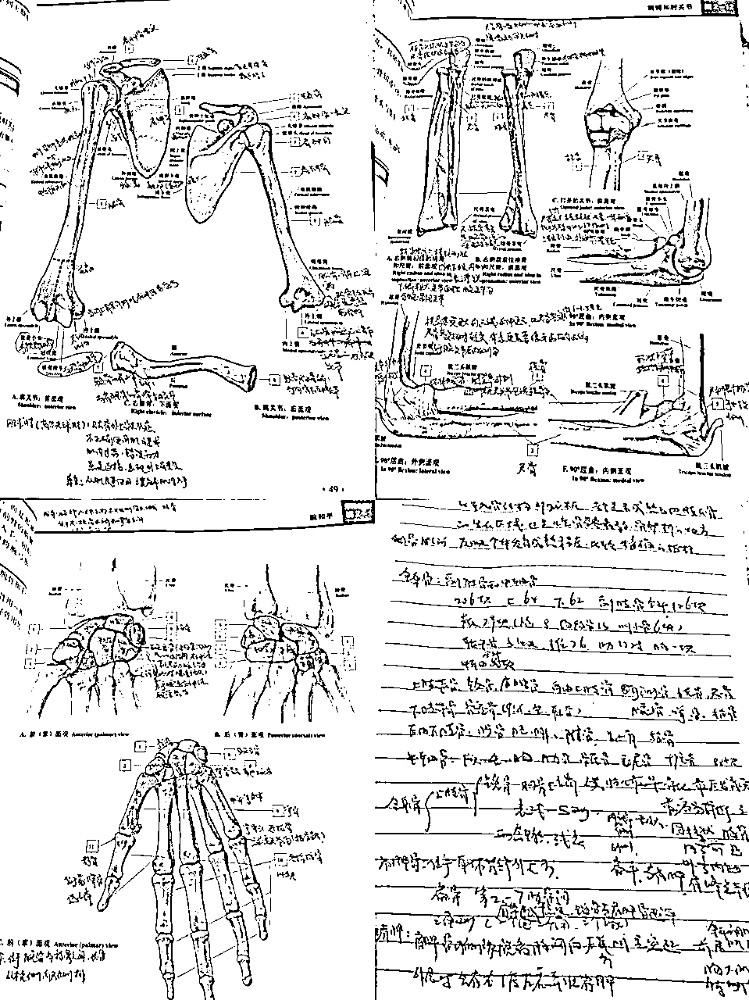
对于小白，听运动解剖就像听天书，没有高效的学习方法，只有一颗死磕到底的决心。
一遍听不懂就听两遍，五遍，甚至十几遍……，把音频书写成文字，觉得老师说的每一句话都是重点，打卡三个月后，体能明显提升了。
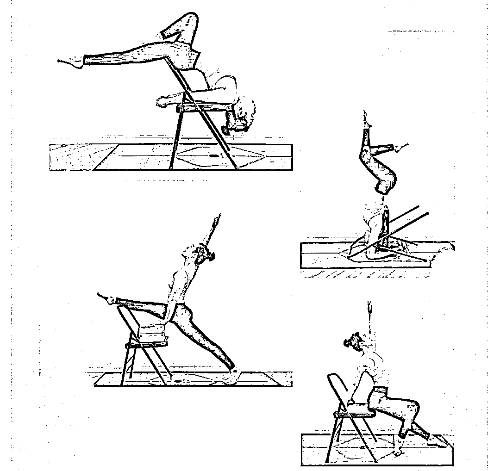
2018年，为了更系统的学习瑜伽及康复知识，一个人拖着行李，大年初几就到了山东济南，开始为期40天的学习。
每天除了7个钟的教练课，我还给自己额外增加了4个钟的会员跟练课，想尽量多的学习老师的排课和授课方法，再加上大量的课后作业，每天只能睡5个小时，期间的饮食就两个原则，省时+抵饿。

从济南回家后一个多月，怀上了二宝，但学习没有停，孕四个月的时候去了合肥，学习运动康复课程。
孕期坚持上课到临产，要求自己每一节要有排练，有反馈，有精进，被会员认可称作偶像。
为了尽早恢复体能重返职场，产后仅仅2个月就去济南复训，回武汉的第二天开始找工作，第三天开始上班，想着自己立足后能把孩子和家人也接过来。
工作的疲劳加上处于产后恢复期，肩颈常常难受到坐着不能超过30分钟，走路走不了一公里，脖子无力到支撑不住头部，躺着都不能缓解那种。
后来用自己所学的运动康复知识，大概处理了30分钟症状完全消失，至今没有复发过。
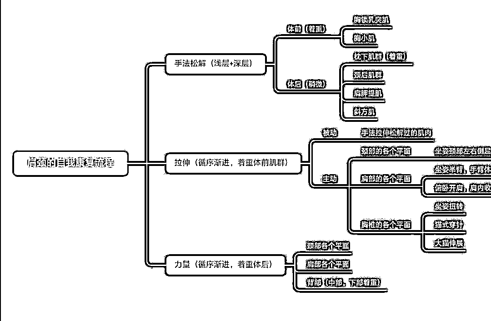
9有了这次经历，就经常在同事和会员身上操作，和馆里的私教老师交流，收到了很多好的反馈，极大的增加了我的自信。
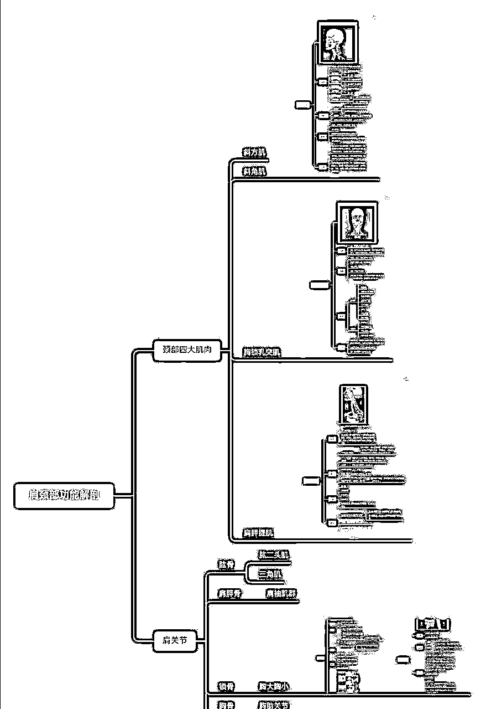
2022年有了更多新突破，给公司同事培训肩颈理疗、椅子瑜伽、抖音小红书视频号直播分享瑜伽，录制短视频分享康复知识。
私教会员好评如潮，收入是之前的5倍，和家人定居武汉等等。

接下来，我会在精力允许的情况下，把自己所学的知识，录制成线上课程，帮助更多有需求的人解决慢痛问题。
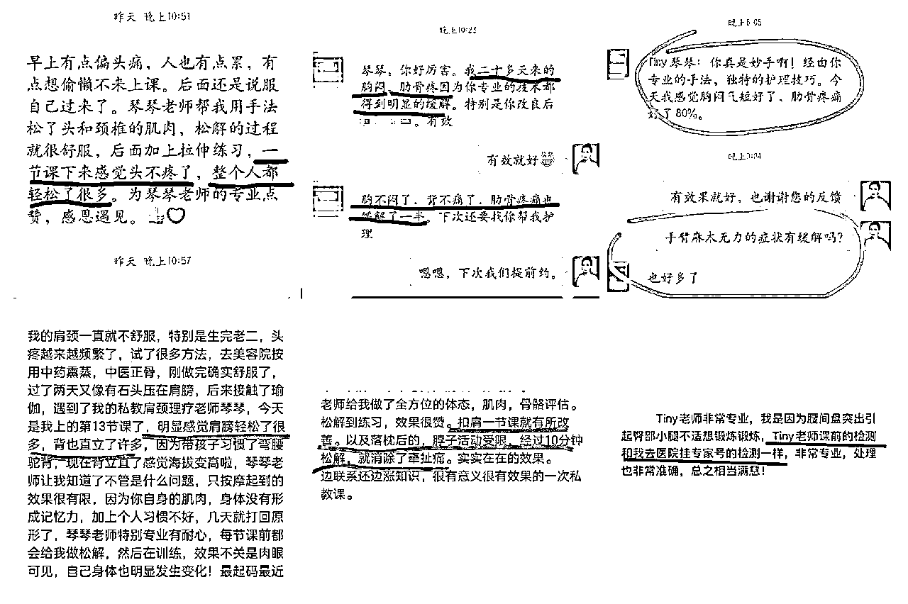
一开始由于不擅长和抵触销售，在瑜伽馆里有时连续3-4个月业绩为0。
那段时间经常反问自己，“每天早出晚归拿着入不敷出的工资，是为了什么？两个孩子也压根没时间陪。”
“要么就别干了，回家一心一意带孩子吧。本身所做的一切，也是为了孩子。”
心里动了无数次离职的念头，但一次次，被领导和同事劝阻着。
我这个人对自己的要求就是，做事情要么不干，要么竭尽全力干好。
既然大家这么信任我，我在心里暗暗下了一个决心，必须要改变现状，去跟高手学习，去提升自己的专业和能量。
才不辜负自己义无反顾的走出农村，也不辜负家人的支持，更不辜负会员和同事们的信任。
出去学习，对于当时的我来说，经济压力非常大，因为本身入不敷出没有积蓄，学习期间请假也没有薪资，还有上万的课程费用、差旅费等等。
更难的是，学完回来之后，必须没日没夜的加班加点，把请假期间欠的业绩、课时，补回来，不然领导不可能一次又一次给我批假学习。
有一次我印象极其深刻，2个多月都没有休息过一天。
其实最难的是，我在学习的时候，不确定能不能直接带来回报，拿到相应的结果。
迷茫的时候，选最难的那条路，不管有多大的困难，死磕就对了。
这就是我的做事风格。
后来先后去了武汉、合肥、成都、杭州、北京，上海，多次学习运动康复行业大佬的精准评估、肌筋膜链运动康复、内脏调理等等课程。
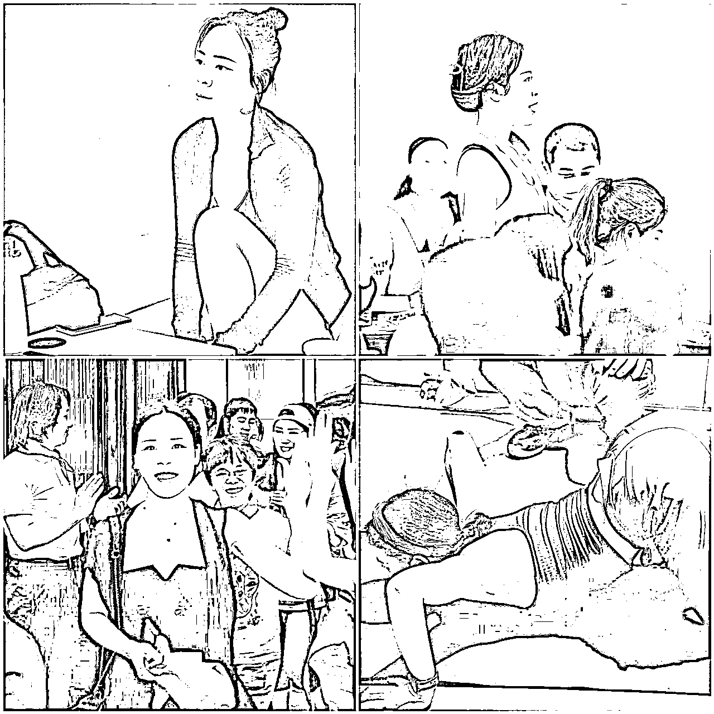
去深圳、武汉学习产后修复、大肚修复课程。
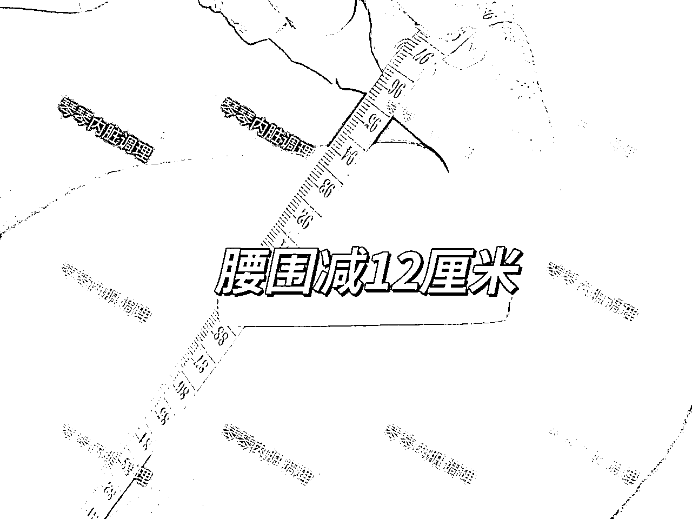
去杭州学习软组织损伤徒手疗法课程等等。
因为把运动康复当做终身事业，也为了更好的服务会员，我把圈里大部分大佬的线下课，都学了一遍。
随着专业实力的变强，我渐渐从同事中脱颖而出，业绩从0快速做到了月销10万，20万、30+万。
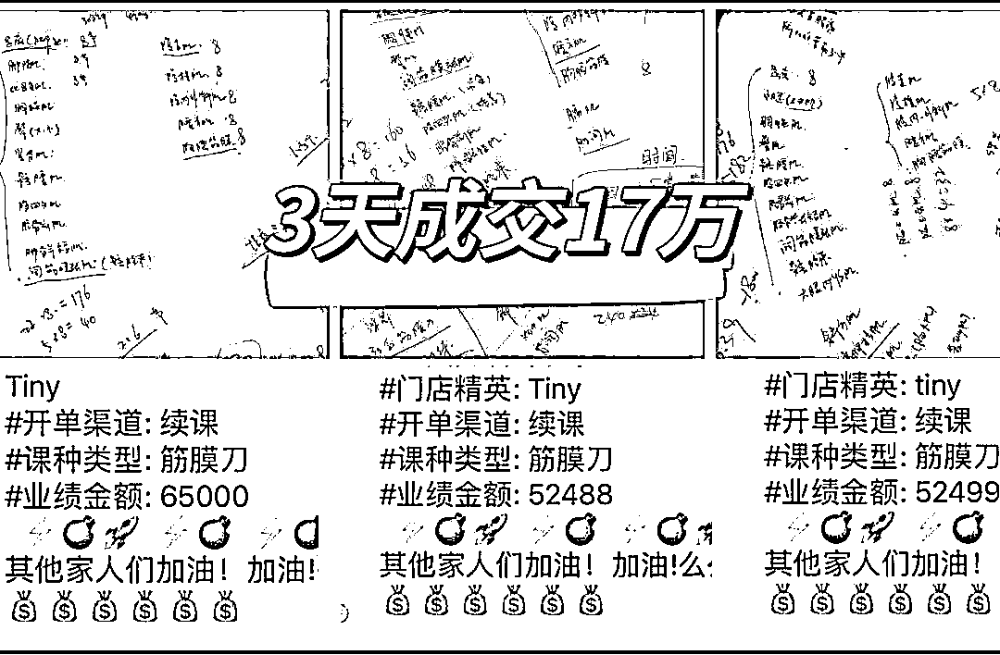
10万大单的这个客户基本信息是，女，40多岁，企业高管。
是馆里另一个老师负责的会员，因为那段时间我几乎每天都有成单，而且金额都不小，所以她铺垫我进去，帮助做成交。
这个会员最明显的症状是多年的肩颈痛和左侧屁股周围痛。
特别是屁股疼，久坐和睡觉时，都很折磨人。
做过针灸，也做过推拿，跑过各大医院，但效果一直不理想。
无评估不康复，在课堂上，我了解了背景信息后，先是给她做了局部和整体的精准评估，罗列出与症状相关的原因，并一一给她讲解和答疑，解除了她心中所有的疑虑。
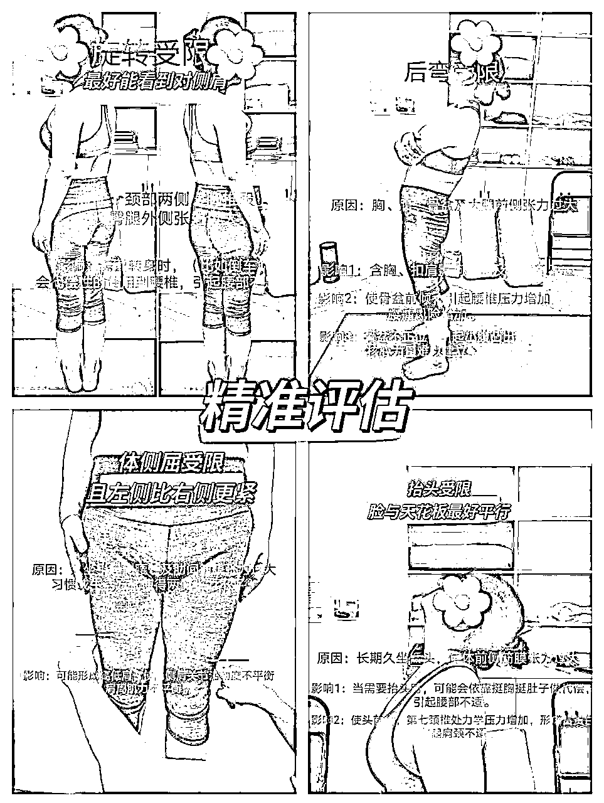
上课过程中，我把她当下最想改善的肩颈问题，针对性做了处理。不到半个小时，她说感觉全身如释重负。
这个客户当场就签了合同，也兑现了回家后转账十万的承诺。
当时我在的瑜伽馆，一共9个老师，为什么就我能谈下这个单子。
因为给客户讲病痛来源，我在2016年就开始学习运动解剖和肌筋膜原理，一下子就能表达清楚。
因为精准的评估和手法，立刻让客户感受到效果，症状消失。
因为制定康复方案，我当场就把1年300节的核心方案呈现给了客户。
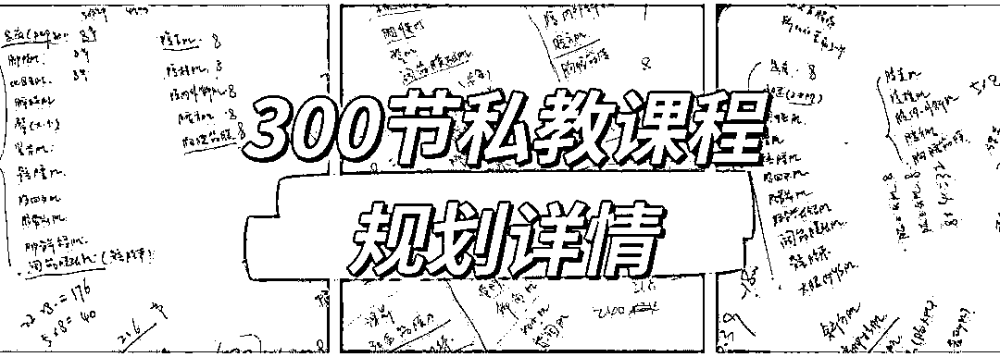
其实不管是运动康复行业，还是别的行业，你的营收=客户数量 X 客单价X 成交率 X 复购率 X 推荐率。
篇幅有限，我核心分享下如何获客、提升客单价、提升成交转化率这三个维度。
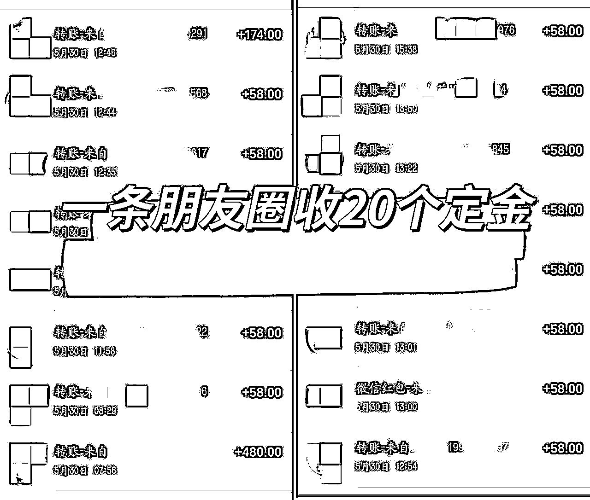
我以前在馆里的时候，你知道我们怎么搞营销？就是最传统的方式，和同事们一起出去发传单，你没看错，就是这种最古老的方式。
但这种方式，成交率极其低，甚至比电话销售还低，因为大家都非常讨厌这些骚扰性质的营销了。
然而就是这种方式，积累的潜在客户，在我自己单干后，绝大部分被我成交了。
因为我比很多教练和销售多了一个动作，做分享。
在视频号和朋友圈，持续分享我的学习心得和服务会员的经验案例。

这时候潜在客户对我的心态其实已经完全变了，从把我当销售，到把我当老师和朋友。
这里着重分享下，我是如何发朋友圈的？
每天3-5条朋友圈，1-2条个人积极的生活方式，1-2条会员服务心得，1条干货知识。
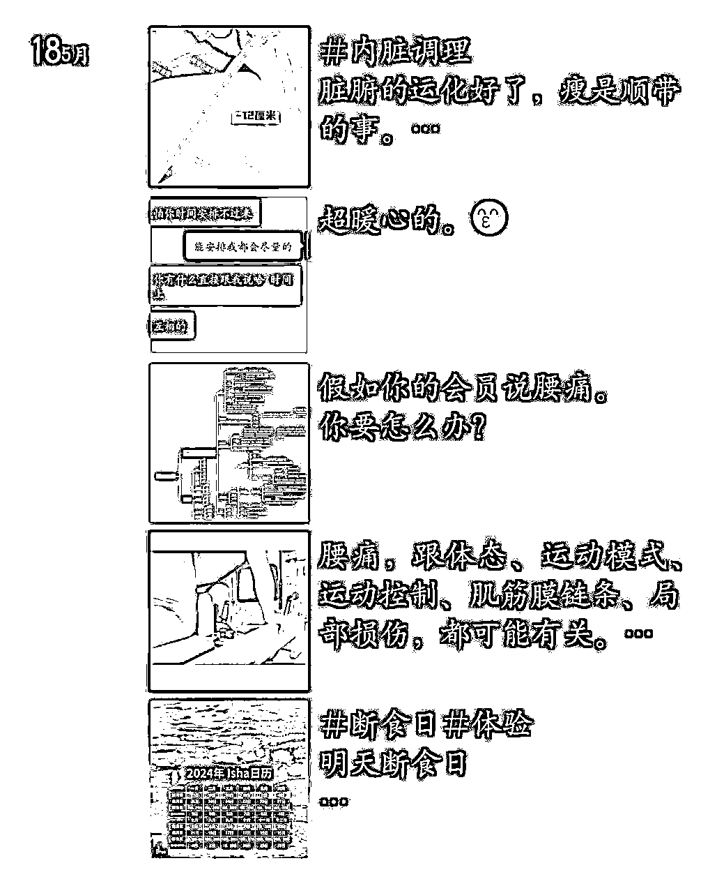
很多同行和前同事，跟我请教经验，我其实就不断给他们说，他们太懒了，把在朋友圈营销自己的大好机会给浪费掉了，只知道复制粘贴，刷屏发广告。
我的核心心法是提高耗课率，别人一次一节，我会员一次上8节课，别人一年的私教，我一个两月就服务完了，这就相当于之前8倍的客单价。
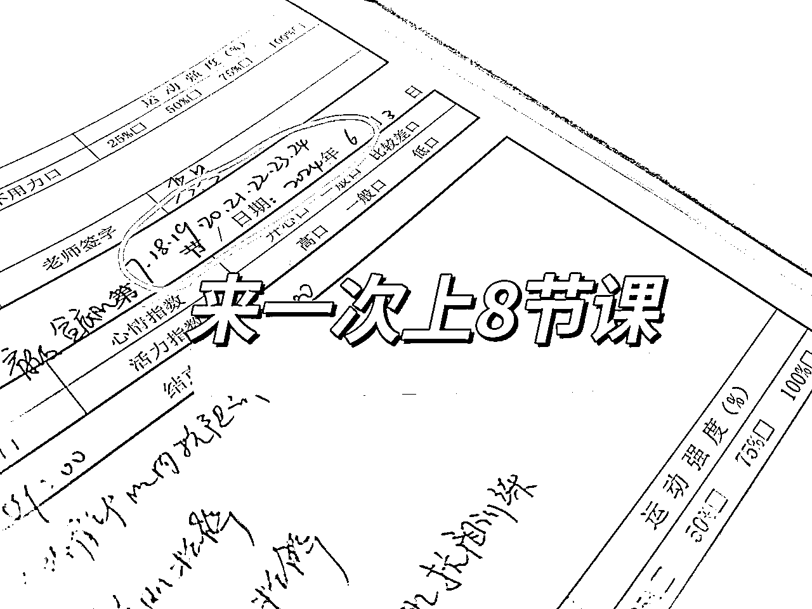
为什么别人服务会员，求着会员来，但是我的会员，提前约，而且来一次上这么多课。
第一种方法是，建立专业信任度。
当你成为行业足够专业的人，你说啥，会员都认可。
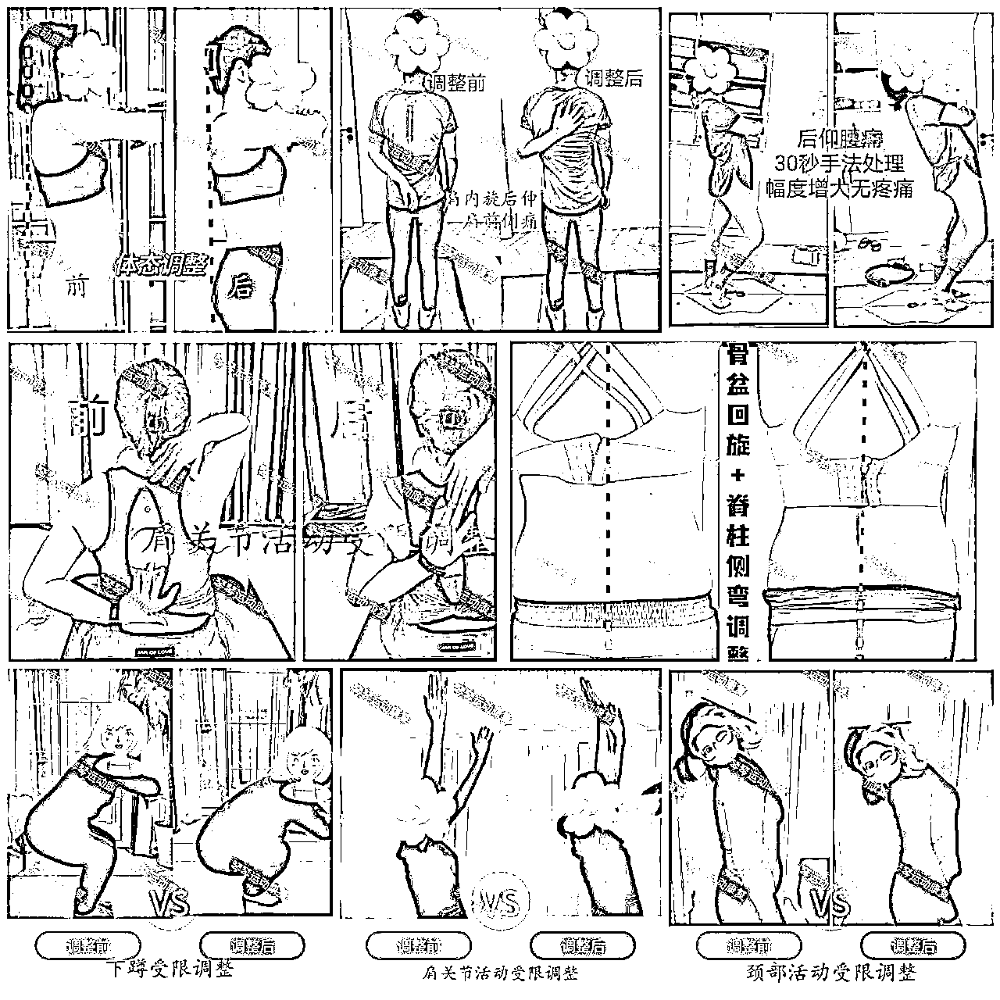
第二种方法是，降低会员参与难度。
很多人学习，特别是成年人的学习，往往会因为没有及时的反馈而中途放弃，健身、减肥都是如此。
我在常规的运动康复之外，引入了软组织损伤徒手疗法（后面简称手法），会员躺着那里，就能轻松感受到效果。
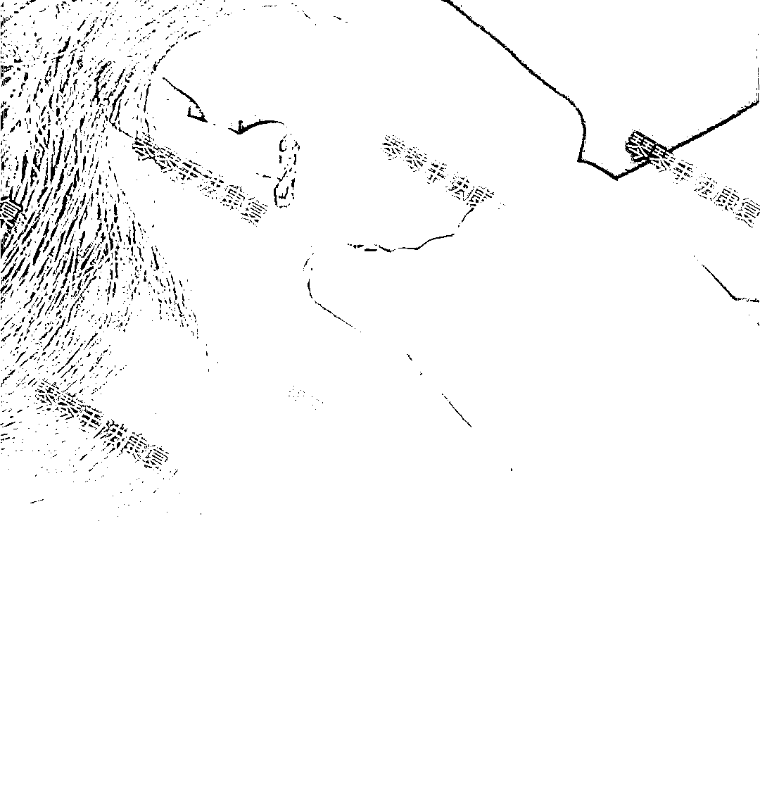
而且帮她们解决一处问题，她们就会主动追着续费，解决身体其他问题，更重要的是推荐七大姑八大姨都来。
3 实现99%的到店成交率
做到99%的高成交率，核心就一点，要不销而销。
我的所有会员，都是奔着我来的。
简单来说，就是专业+口碑+客户至上的服务。
A 专业：个性化的课程设计和不换教练
根据会员的能力和症状，有强度适中的课程设计（既有练习，也有拉伸环节），也有因人而异的动作难度。
相比我以前在馆里上班的时候，馆里教练流动性大，而且教练的水平层次不齐，很难做到对一个学员的情况特别熟悉，持续的跟进服务。
但我自己开馆后，对所有的会员都知根知底。
B 口碑：100%的口碑和好评
把事情做到超预期，客户才有深刻的印象和转化的动力。
我的课程口碑是100%，甚至跟很多会员都有非常好的私交，成为了好朋友。
C 客户至上的服务
不推课，会员上课临时有什么变化，我都会客户至上，先顺着他们的时间。
提供超高情绪价值，有很多小白学员，动作完成度并不高，但是我会每次看到他们的进步点，鼓励和夸赞。
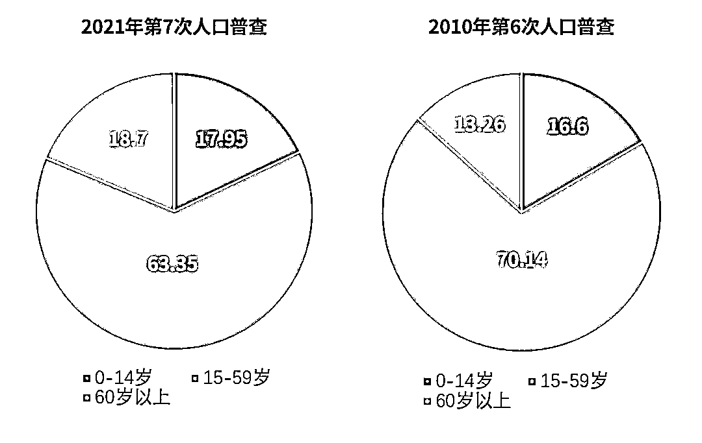
老龄化，在全球都是一个不可逆的趋势，国内更是如此。
所谓老龄化社会，联合国的标准是，65岁以上人口占比超过7％。
中国在2021年的第七次人口普查，60岁以上人口占比18.7%，65岁以上人口占比13.5%。
邻国日本，更是全球老龄化比例最高的国家，也是我们未来的样子。
根据日本总务省的统计数据，截至2021年10月，日本65岁以上老人，占到人口总数的28.6%。
按目前的趋势发展下去，到2025年，也就是1年后，日本65岁以上老人的占比将超过30％。
运动康复行业，主要服务的群体就是有钱有闲的中老年人。
其实欧美国家的运动康复，已经非常成熟了，就像我们现在随处可见的健身房，他们也把运动康复治疗费用纳入了医保体系。
而国内还在行业新生阶段。
看一个行业的前景，当然不能只看宏观的趋势和国家政策，也不能只看微观的某个人某家公司赚了多少，更值得看的是中观层面的行业情况。
看行业前景有一个公式，行业规模=覆盖人群 X 客单价 X 复购率 X 推荐系数。
经济不景气的时候，大家会节衣缩食，大笔消费更会慎重，但对身体疼痛上，花钱不会犹豫的。
属于大健康行业，推荐率是非常高的，大家都愿意给亲朋好友送健康，任何聚会聊到最后都是聊健康。
不像内卷行业，千万人抢一个岗位，学习者之间更多的是竞争关系。
一对一私教的收费，每小时500到5000不等，而且没有天花板。
一边是那么多网约车司机、送外卖的年轻力量，纯卖体力，另一边是老龄化社会服务，国家也是多次提到把劳动力转型到这块服务。
围绕老龄化去做事，事半功倍。
AI时代大潮面前，我们做任何事业上的决策，和以前相比，都要新增一个维度，会不会被AI取代。
运动康复是一个对专业和服务要求非常高的行业，评估、处理、沟通这些核心工作流，AI可以部分提效，但很难替代。
学习交流+V：tanqinqin01